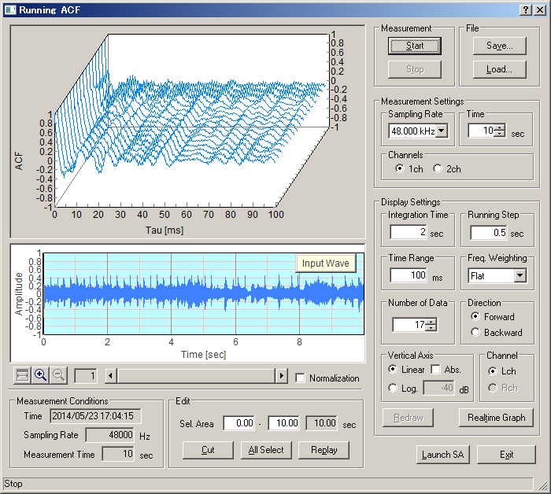
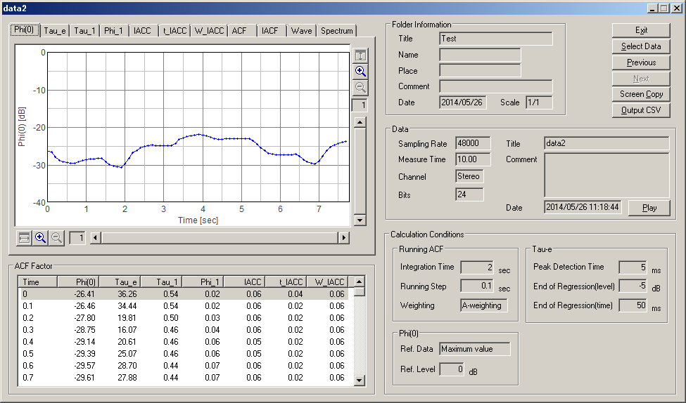
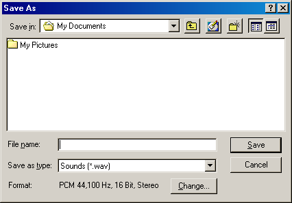

DSSF3 > RA > Operation Guide > Sound recording in RA
Using the ACF measurement and Environmental noise analyzer (EA)
Sound recording function is equipped with the Running ACF window in RA, and the Environmental noise Analyzer /EA. In each measurement, sound is recorded automatically. When the measurement data is saved, sound file is also saved in the common database with additional information such as the measurement date and the measurement conditions.

SA (sound analyzer) is also equipped with a replay function. It is possible to play a sound by SA and analyze it by RA.

It is also possible to input and output a WAVE file. If a WAVE file is chosen when saving a file, a .WAV file can be saved directly. This file is reproducible by Windows Media Player, or can be read into the sound editing software, such as "CoolEdit". You can edit and process the sound waveform directly.

By using WAVE input/output functions, re-analysis and sharing of the data with other system becomes possible. For the high resolution analysis, just record a sound with low resolution and analyse it later. Simultaneous sound playback and measurement is also possible. For example, play the recorded sound and start the FFT analyzer. The power spectrum or the 1/3 octave band analysis is performed in real time. For this purpose, the multi task OS like Windows 2000 and XP are recommended.
DSSF3 > RA > Operation Guide > Sound recording in RA